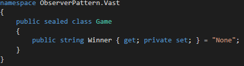
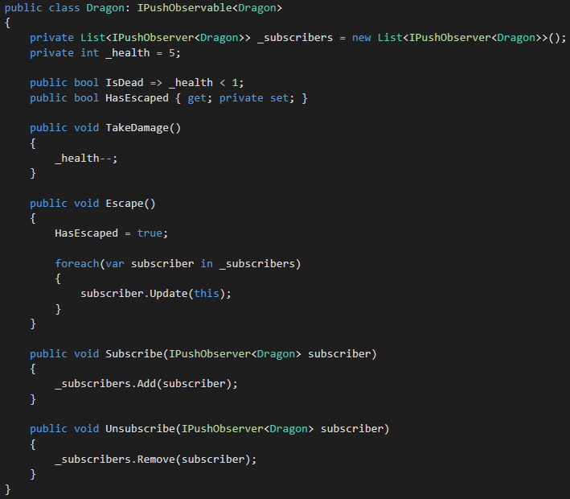
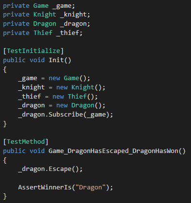

Design Patterns: Observer
The Observer Design Pattern is a way to structure a system so that objects that are strongly coupled together can remove the need to constantly check values and instead use a subscriber based system to make updates instead.
Generally this pattern is utilized with a single observer that watches over one or more other objects. Instead of statically defining each subject we want to observe, we can instead craft a more dynamic approach that will only force updates when needed. There are two main styles of achieving this design, push and pull, but for the purposes of the following coding practice we will utilize the push model. This system will have each object push its current state to the observer object. The observer will then consume this state and update itself as necessary.
The following solution is the base exercise used within the rest of the post:
Download the Observer Pattern Exercise
Exercise
Imagine we were tasked with converting the board game Vast into a digital format. In order to determine when the game has ended and if any of the game’s win conditions have been met we would want to have a Game class that could view each of the player’s states.

Our initial Game class only has a Winner attribute that is set to None while the game is in progress. Whenever any of the following conditions are met we will want to update the Winner attribute accordingly:
- If the Dragon escapes, the Dragon wins
- If the Thief steals six treasures, the Thief wins
- If the Dragon takes 5 damage and dies, the Knight wins
- If the Knight takes 7 damage and dies, the Goblins win
For the first test, we will want to modify the Game and Dragon classes to have it so that when the dragon escapes the Game, the Dragon will be marked as the winner.

The Dragon class will need to use the Observable interface and define a Subscribe and Unsubscribe method. Inside of our Escape method we will push the state of our object to each of the subscribers to the object.
For these tests, there is no need to implement the ability to have list of observers for a single object. However, in a real-world application having multiple subscribers is often a necessity. This allows many listeners to update on a single event call so if we had a UI and a map that needed to update off of the same events we would not have to change the structure of our Dragon class and would only need to add the listener to our new elements.
Next we will modify the Game class to implement the Observer. Every time the Dragon updates it will send its state over to Game which it will read to make the determination if the Winner has changed or not.

In order to get our test to pass, we just need to setup the relationship between the Dragon and the Game state and our Observer Pattern is implemented.
Download the Observer Pattern Solution